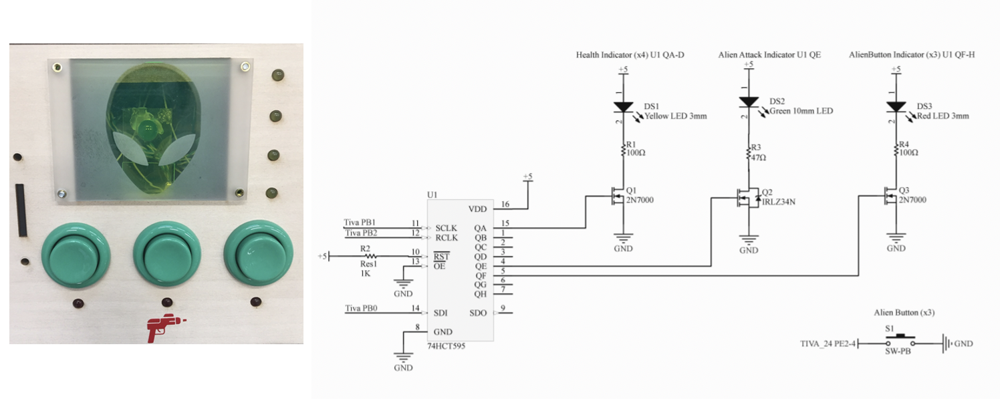
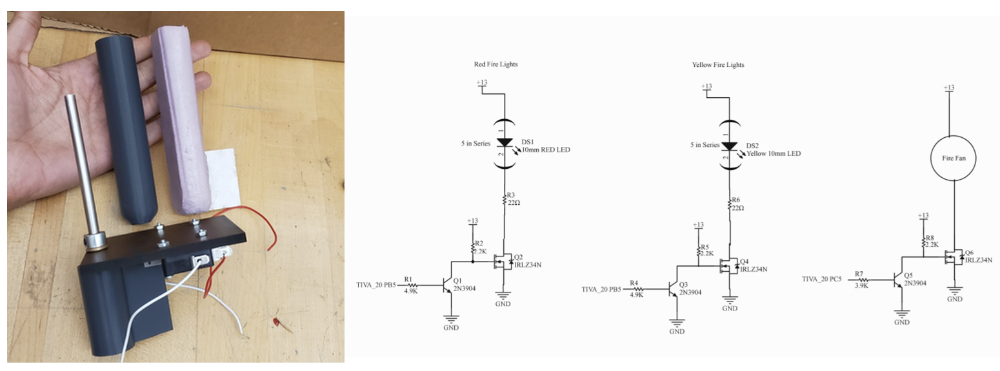
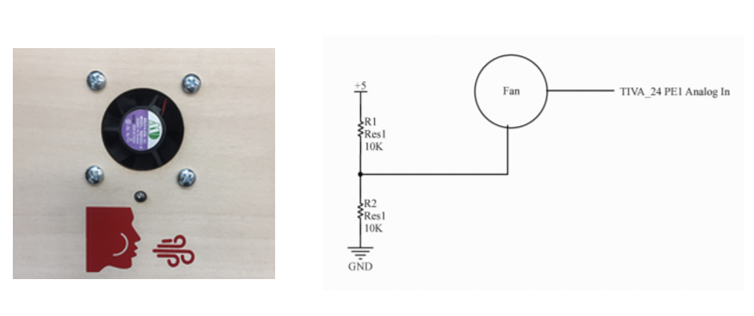
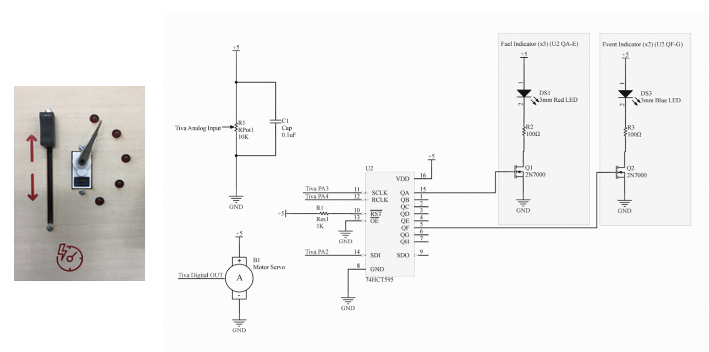
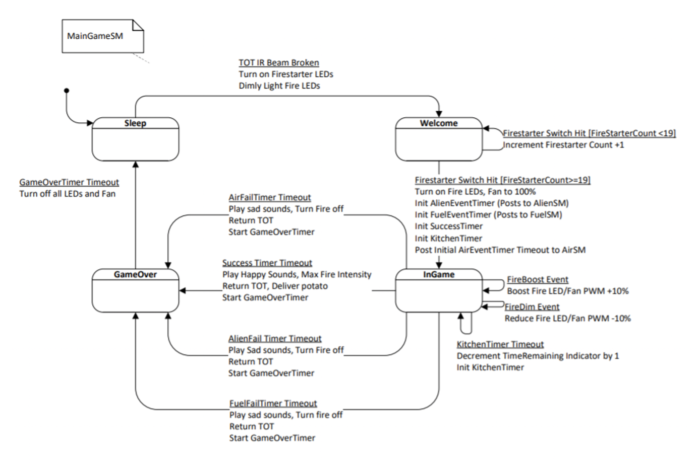
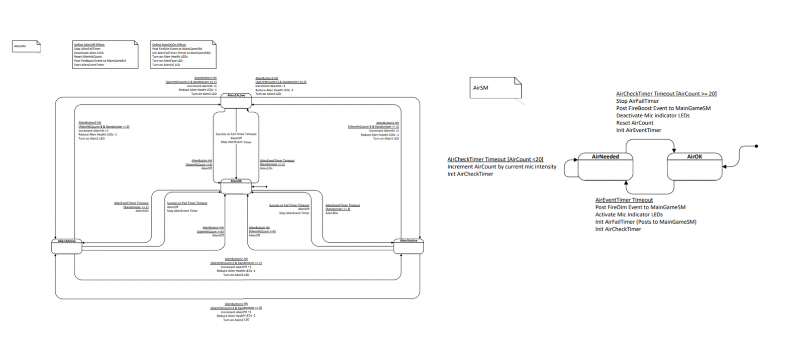
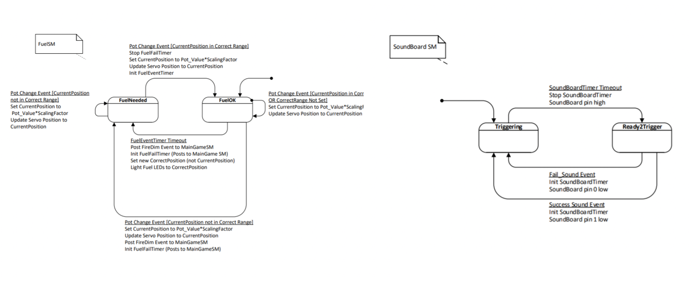

ME218A: Smart Product Design Fundamentals
This mechatronics project was to build an arcade game that interacts with players by analog sensing and non-contact sensing and return feedback with audio and motion. Everything was coded in C, and I worked mainly on the circuits and coding portion of the project. The game was designed to simulate cooking a potato while completing tasks to keep the “fire” going. The game is initiated by inserting a coin, and survival for 45 seconds is needed to succeed and return the coin. Short descriptions of each of the module are as follows, detailed explanation can be found in this dedicated page:
Coin Insert Module
Coin insertion module allows the coin to travel a semi-circle route. A sub-micro servo is placed at the midpoint of the track with its arm occluding the path. Just above the servo is an IR LED and an IR phototransistor that changes state when the beam between the IR LED and the phototransistor is broken due to the insertion of a coin. After the game is completed, the servo arm will rotate out of the path of the coin and return it back to the user.
Alien Attack Module
This module was designed to prompt the users to press respective arcade buttons whenever the LED light flashes. The four lights on the right indicated overall “health” of the alien, and when enough buttons are pressed at the right time, it was considered all aliens were killed.
Firestarter Module
The fire-starter module was designed to resemble the motion of someone trying to start a fire from two sticks. A 3D printed stick protrudes from the control panel and this stick has a ¼” D-shaft press fit into the center. This D-shaft ran through a bushing pressed into the control panel and was fixed on either side with shaft collars. The opposite end of the D-shaft was pressed into a paddle-like 3D print constrained in rotation by two limit switches. The speed and number of limit switch hits were recorded and when the user input reaches a preset condition, the start of the fire is simulated.
Fire Oxygenation Module
This module was designed to resemble blowing on the fire to get the fire going. The user had to blow a PC fan which produced a back-driven voltage that was kept track to adjust the fire simulation. By attaching one lead of the fan to a 2.5V source and the other to a TIVA pin configured as an analog input, we can read a voltage what is reduced in a periodic pattern when air blows past the fan. By subtracting this analog input from the zero-state input, we extract a positive integer when air is flowing and zero when it is not.
Fuel Adjustment Module
This module was designed to resemble pouring into a right amount of fuel. The servo and LED lights indicate the amount of fuel needed, as users were to use the sliding potentiometer to match the required fuel. The slide potentiometer which bridges 3.3V and ground to get a wide range of readings at the analog IN TIVA pin, and this value is then converted into a PWM time to move the fuel dial to the corresponding position.
Software
The software was coded in C based on the following state machines. The three primary game modules each have their own state machine. A larger MainGame state machine is used to manage overarching pieces of the game such as coin insertion/return, fire display, time recording, and final sound output.
  